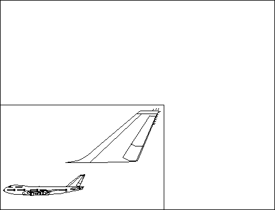

More than one copy of an entire model space can be drawn in page coordinate space, and each copy can be transformed as required. Parts of the model space also can be transformed to the presentation page. For example, an enlarged view of the tail of an aircraft can be shown with a reduced view of the complete aircraft in one corner. This is shown in the following figure. 
Presentation-Page Space
The entire model space (the aircraft) and a part of the model space (the tail of the aircraft) are drawn to a single page coordinate space. In each instance, scaling and translation transformations have been applied.
Alternatively, the displayed picture can be made up of several subpictures with no common graphical elements. For example, the aircraft can be drawn in one part of the display, and a map of an airport in another part of the display. In this instance, the final picture would be derived from different model spaces.
Whether multiple views are derived from a single model space or from different model spaces, there are two items to address for each instance of a model space incorporated into the presentation page:
To get views of one or more model spaces on the screen simultaneously, each model space is drawn the required number of times. Before each drawing request, the viewing window is defined and a viewing transformation is specified.